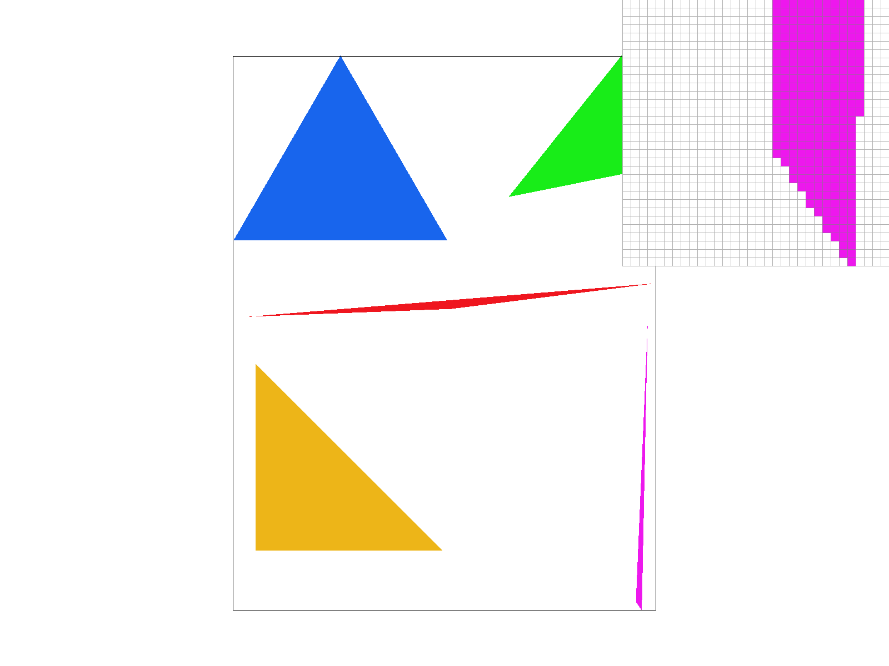
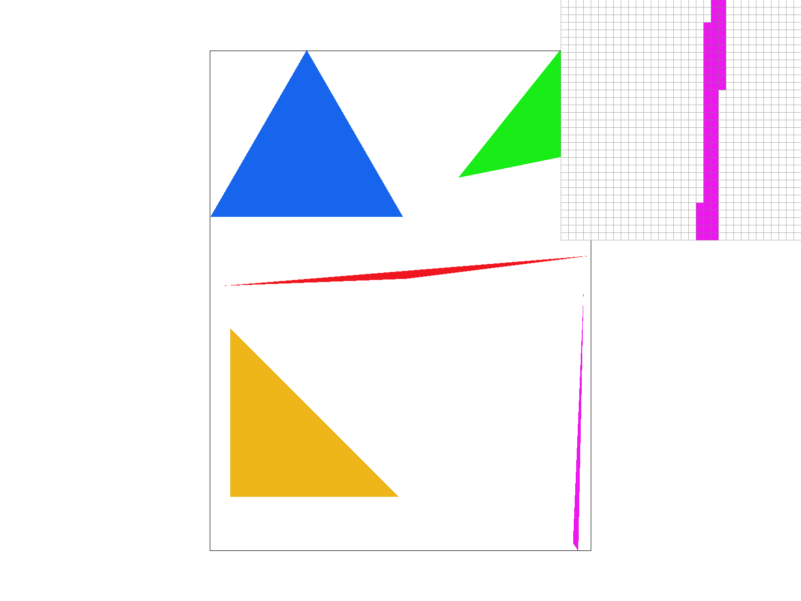
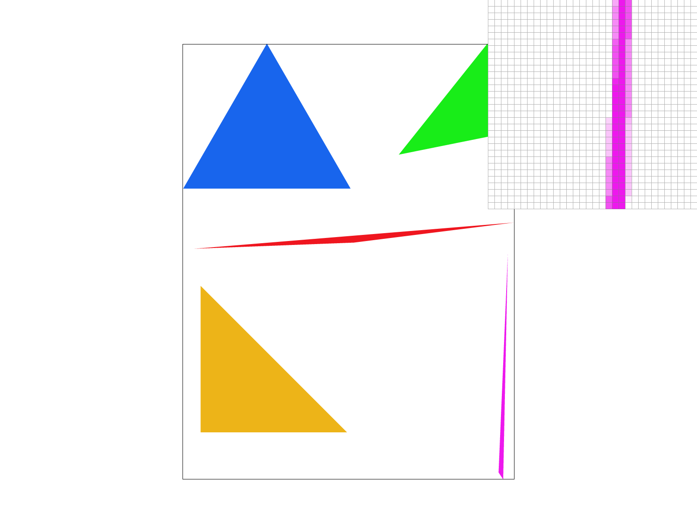

Give a high-level overview of what you implemented in this project. Think about what you've built as a whole. Share your thoughts on what interesting things you've learned from completing the project.
Triangles are rasterized using the three line test. Given that a triangle is composed of three intersecting lines, we can check to see whether a point lies within the triangle by checking whether the point’s dot product with the orthogonal vectors of every edge is greater than or equal 0. The rationale behind this approach is that, if a point lies within the boundary, it’s dot product with the vector orthogonal to the edge should be greater than 0 or equal to 0 (being 0 if the point lies directly on the border). In the case that that the dot product is negative, it lies outside, the dot product will be negative. For each point within our sample space, we will sample the point (x,y) at the center of the pixel (x+0.5, y+0.5) and take the color present at this location and store it in the sample buffer calling fill_pixel. The resolve_to_framebuffer function will then be called, writing in the color at the sample_buffer location into the framebuffer.
We prove that the sampling is at least as efficient as sampling from the boundary as follows:
Let x0 = min(x coord of triangle vertices), y0 = min(y coord of triangle vertices), x1 = max(x coord of triangle vertices), y1 = max(y coord of triangle vertices) In order to prevent looping through extraneous points that would not be considered by the triangle, we only sample in the space occupied in the rectangle created from the vertices (x0, y0), (x0, y1), (x1, 0), (x1, y1). This is, by definition, the bounding box of the triangle and hence is no worse than an algorithm that checks each sample in the bounding box of the triangle.
|

|
The supersampling algorithm derived works by scaling up our sample buffer to now accommodate space for each of the supersamples that are taken, sampling each supersample associated with that pixel and storing them within the sample buffer, and finally averaging the RGB all of the sample_rate supersamples taken to generate the new pixel to be inserted into the framebuffer. The largest changes existed within rasterize_triangle.In rasterize_triangle, the inner workings were changed such that for each pixel location (x,y) we traverse in stepsizes of x + 0.5/sqrt(sample_rate) and y + 0.5/sqrt(sample_rate) to acquire a total of sample_rate supersamples to which we will store in the sample buffer. Simplified steps are presented below:
Supersampling is useful for antialiasing images. If only one sample is taken per pixel, the result would have “jaggies”, leading to poorly rasterized images. With supersampling, we are able to eliminate jaggies caused when colors are not directly present in the sampled location but still present within the pixel. Supersampling allows for one to remove “jaggies” and other artifacts that come from low sample-rate images.
ince there are now multiple samples associated with the pixel being inserted into the frame buffer, the rasterization pipeline needed to be modified as there is no longer a 1:1 relationship between the sample buffer and frame buffer. In resolve_to_framebuffer, instead of writing directly from the sample_buffer into the frame_buffer, we aggregate the associated supersample entries and generate the new color to be entered into the frame buffer. This entry will have RGB values associated with the average RGB values across all supersample entries.
Supersampling was used to antialias triangles by averaging the supersampled RGB values. By rendering a higher resolution image, we are able to get more information about the image which can then be used when downsampling the image. By having more information we can represent the color values of pixels more easily and remove artifacts such as jaggies.
|

|
|

|
The results are observed due to the location of the edge within the pixel. With a sample rate of 1, if the edge does not reach the point being sampled, it will not show up in the image. This leads to the jaggie pattern seen in the first image. As we increase the sampling rate, we are able to get more information as to the location of the edges within the triangle and therefore able to more accurately color the pixels. As the sampling rate increases, we are able to generate more accurate representations due to more sampling points per pixel.
With my new transformations, I was attempting to recreate Usain Bolt’s iconic victory pose after winning several gold medals in olympic events in the 100m and 200m. To do so, I had to rotate his arm into the proper positions to create the iconic stance as well as making him kneel by bending and rotating his legs.
If you are not participating in the optional art competition, don't worry about this section!